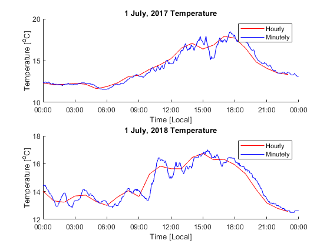

close all;
clear;
station_lon = 236.620;
station_lat = 48.417;
time_start_2017 = datenum(2017,7,1,0,0,0);
time_end_2017 = datenum(2017,7,1,23,59,59);
time_start_2018 = datenum(2018,7,1,0,0,0);
time_end_2018 = datenum(2018,7,1,23,59,59);
hour_data = load("data/AllStations_temperature_h_2019.dat");
[hour_rows, hour_cols] = size(hour_data);
all_hour_times = hour_data(3:hour_rows,1);
station_lon_all = hour_data(1,2:hour_cols);
station_lat_all = hour_data(2,2:hour_cols);
number_stations = length(station_lat_all);
temperature_data_all = hour_data(3:hour_rows,2:hour_cols);
diff_lon = abs(station_lon_all - station_lon);
diff_lat = abs(station_lat_all - station_lat);
[~,station_index] = min(diff_lon+diff_lat);
station_temps = temperature_data_all(:,station_index);
timestamps_index_2017 = find(all_hour_times >= time_start_2017 & all_hour_times <= time_end_2017);
hour_times_2017 = all_hour_times(timestamps_index_2017);
hour_temps_2017 = station_temps(timestamps_index_2017);
timestamps_index_2018 = find(all_hour_times >= time_start_2018 & all_hour_times <= time_end_2018);
hour_times_2018 = all_hour_times(timestamps_index_2018);
hour_temps_2018 = station_temps(timestamps_index_2018);
minute_data = load("data\JamesBay_temperature_2019.dat");
minute_time_start = minute_data(1);
minute_time_end = minute_data(2);
minute_data_points = minute_data(3);
all_minute_times = linspace(minute_time_start, minute_time_end, minute_data_points) - 7/24;
all_minute_temperatures = minute_data(4:minute_data_points+3);
minute_index_2017 = find(all_minute_times >= time_start_2017 & all_minute_times <= time_end_2017);
min_times_2017 = all_minute_times(minute_index_2017);
min_temps_2017 = all_minute_temperatures(minute_index_2017);
minute_index_2018 = find(all_minute_times >= time_start_2018 & all_minute_times <= time_end_2018);
min_times_2018 = all_minute_times(minute_index_2018);
min_temps_2018 = all_minute_temperatures(minute_index_2018);
figure(1)
subplot(2,1,1)
hold on;
plot(hour_times_2017, hour_temps_2017, 'r')
plot(min_times_2017, min_temps_2017, 'b')
xlabel('Time [Local]')
ylabel('Temperature [^oC]')
title('1 July, 2017 Temperature');
legend({'Hourly', 'Minutely'});
datetick('x')
figure(1)
subplot(2,1,2)
hold on;
plot(hour_times_2018, hour_temps_2018, 'r')
plot(min_times_2018, min_temps_2018, 'b')
xlabel('Time [Local]')
ylabel('Temperature [^oC]')
title('1 July, 2018 Temperature');
legend({'Hourly', 'Minutely'});
datetick('x')
hour_mean_2017 = mean(hour_temps_2017);
hour_mean_2018 = mean(hour_temps_2018);
disp("2017 hourly mean: " + hour_mean_2017)
disp("2018 hourly mean: " + hour_mean_2018)
[conf_2017, conf_2018] = conf(hour_temps_2017, hour_temps_2018);
disp("2017 confidence interval: [" + conf_2017(1) + ", " + conf_2017(2) + "]");
disp("2018 confidence interval: [" + conf_2018(1) + ", " + conf_2018(2) + "]");
disp(" ")
min_mean_2017 = mean(min_temps_2017);
min_mean_2018 = mean(min_temps_2018);
disp("2017 minute mean: " + min_mean_2017)
disp("2018 minute mean: " + min_mean_2018)
[conf_2017_min, conf_2018_min] = conf(min_temps_2017, min_temps_2018);
disp("2017 confidence interval: [" + conf_2017_min(1) + ", " + conf_2017_min(2) + "]");
disp("2018 confidence interval: [" + conf_2018_min(1) + ", " + conf_2018_min(2) + "]");
2017 hourly mean: 14.2329
2018 hourly mean: 14.4837
There is an overlap in confidence intervals at 95%.
2017 confidence interval: [13.4123, 15.0535]
2018 confidence interval: [13.9477, 15.0198]
2017 minute mean: 14.2341
2018 minute mean: 14.4844
There is an NOT overlap in confidence intervals at 95%.
2017 confidence interval: [14.1288, 14.3394]
2018 confidence interval: [14.4147, 14.554]
